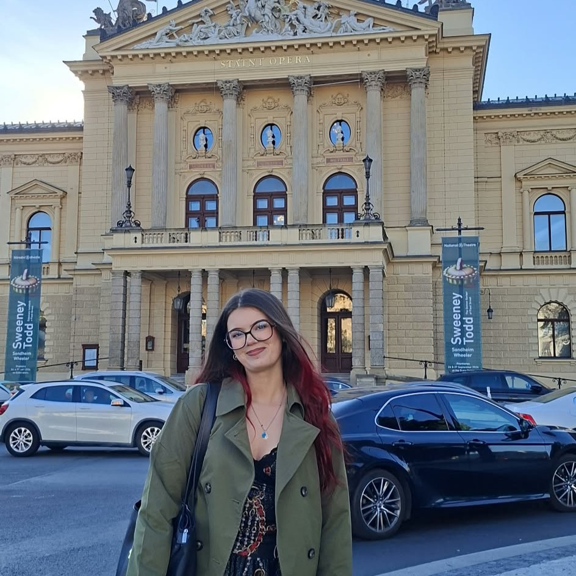

Cześć, jestem Weronika!
Szukam możliwości by stawiać swoje pierwsze kroki w branży. Poniżej znajdziecie więcej o mnie.
Zobacz moje prace
O mnie
Aktualnie uczę się i jestem na 3 roku studiów inżynierskich na Politechnice Lubelskiej. Poza moją techniczną stroną jestem również bardzo kreatywna co staram się wykorzystywać w moim kierunku kształcenia. Poza tym swoją kreatywność wykorzystuje również w wolnych chwilach grając na gitarze czy malując.
Moje Umiejętności
Pakiet MS Office
Biegła obsługa programów takich jak Word, Excel i PowerPoint.
Modelowanie Systemów
Projektowanie architektury informacji oraz tworzenie diagramów przepływu danych i przypadków użycia.
Język Angielski
Poziom komunikatywny – swobodne czytanie dokumentacji technicznej oraz komunikacja.
Zrealizowane Projekty
Moje Portfolio
Projekt zaliczeniowy z wykorzystaniem HTML, CSS i JS. W pełni responsywna strona z obsługą motywów i nowoczesnym układem.
Oraz inne projekty w realizacji...
Zobacz kod na GitHub